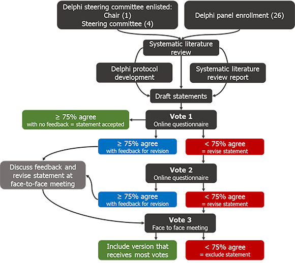

Hearing Loss Association of America took part in the world’s first International Consensus Paper on Adult Cochlear Implantation. This new study focuses on treatment for adults living with severe to profound sensorineural hearing loss.
The paper was authored by 31 hearing experts on cochlear implant treatment. This publication is an authoritative call to government policymakers, funding bodies and health professionals to understand the importance of providing accurate information, referral pathways and access to cochlear implant treatment for adults whose lives could be transformed. Consumers will also be empowered by this new information. Read the Frequently Asked Questions below for more information.
1. What is the International Consensus Paper on Adult Cochlear Implantation?
This paper is the first international consensus publication following a Delphi consensus process on unilateral cochlear implant treatment for adults living with bilateral severe to profound bilateral sensorineural hearing loss (SNHL). It was published on August 27, 2020, in JAMA Otolaryngology.
The paper will aid the development of consistent, clear national clinical guidelines and best practice treatment and aftercare for adults so they can reach their optimal hearing outcome and quality of life.
The International Consensus Paper on Adult Cochlear Implantation includes 20 consensus statements on unilateral cochlear implantation for adults with bilateral severe, profound, or moderate sloping to profound SNHL. Consensus was achieved using the Delphi consensus process. The full methodology is outlined in question 5.
Following publication of the International Consensus Paper on Adult Cochlear Implantation, wide dissemination is expected, and it is anticipated that clinical practice guidelines will be developed or updated by relevant national professional bodies.
2. Why is the International Consensus Paper on Adult Cochlear Implantation important?
This Delphi consensus process is the first in the field of unilateral adult cochlear implant treatment, although it has been widely used in other fields of medical treatment to help establish standards of care and best practice clinical standards. This Delphi process fills a gap in the field of cochlear implantation by consolidating evidence and international expertise in the area of cochlear implantation for adults with bilateral severe, profound, or moderate sloping to profound sensorineural hearing loss (SNHL). This consensus process focused on diagnosis, referral, treatment and aftercare for adults,
The consensus statements represent an important milestone because the knowledge and guidance they foster provides guidance to clinicians that will better define referral, treatment and aftercare pathways for patients and promote best clinical practice. It will provide patients and their caregivers with reference points for the care they should be receiving, helping them with questions to ask when they are not getting the information they need.
3. What is understood by standard of care?
A medical standard of care refers to a diagnostic or treatment process that a clinician should follow for a certain type of patient or condition. For the treatment of hearing loss, the standard of care should encompass treatments that best improve the individual’s quality of life and health, through optimizing hearing function, social participation and engagement. For adults with severe, profound, or moderate sloping to profound sensorineural hearing loss (SNHL), this includes proper diagnosis, timely referral to an appropriate specialist center for assessment and advice. When indicated as the most beneficial treatment option, the patient should be advised by their specialist about access to cochlear implantation and aftercare.
4. Why do we need to improve the standard of care for adults living with SNHL?
A standard of care will help raise awareness and better define referral and treatment pathways so that patients can receive information about a treatment option that may help them. In many countries, adults do not have their hearing assessed as part of regular health checkups. Of those who receive hearing checks and are diagnosed with severe, profound, or moderate sloping to profound SNHL, few are referred to an appropriately qualified hearing specialist to examine whether an implantable hearing device is indicated as the most beneficial treatment option.
Cochlear implants (CIs) are an effective medical treatment for many adults living with severe, profound, or moderate sloping to profound SNHL. However, conservative industry estimates suggest that no more than 1 in 20 adults who could benefit from a CI has one.[1] [2]
Footnotes:
[1] Sorkin D. Cochlear Implants Int 2013;14(Suppl 1):S1.
[2] De Raeve L. Eur Ann Otorhinolaryngol Head Neck Dis 2016;133(Suppl 1):S57–60.
5. What is a Delphi consensus process?
A Delphi consensus process is a systematic and structured method of developing consensus among a panel of clinical experts. In the Delphi process, knowledge is gathered using questionnaires, anonymous voting and iterative feedback to develop a set of consensus statements. Statements are refined over time and consensus is validated when the panel reaches a pre-defined threshold. Owing to its systematic nature, the Delphi consensus process is considered more robust in establishing medical standards of care compared to market research surveys or opinion-driven publications.
6. How was this Delphi consensus process conducted?
The Delphi consensus process was underpinned by a systematic review to identify relevant studies in the subject area. These were used to inform the development of evidence-based draft consensus statements. The draft statements then entered the Delphi voting process, which entailed three anonymous voting rounds. The following chart shows the details of this Delphi consensus process.

Chart: Delphi consensus process based on ≥ 75% agreement threshold.
Systematic literature review
A systematic literature review was conducted to identify studies relevant to at least one of six key areas: i) level of awareness of CIs; ii) best practice clinical pathway from diagnosis to surgery; iii) best practice guidelines for surgery; iv) best practice guidelines for rehabilitation; v) factors that impact CI performance and outcomes; and vi) cost implications of CIs. Studies were screened manually against pre-specified eligibility criteria, and data relevant to the six key areas of interest were extracted from the included studies. Studies were excluded for the following reasons: sample size less than 20, case studies or narrative reviews, studies published before 2005, studies of pediatric population, studies of bilateral CIs or electro-acoustic stimulation or hybrid hearing. Included studies were quality-assessed using a recognized method.[3]
The consensus statements were drafted based on the data in the included studies.
Delphi voting process
All members of the steering committee and the Delphi consensus panel, except the chair, were able to vote in the consensus process. Voting on the draft consensus statements took place in three rounds: two rounds by questionnaire remotely, and one at the face-to-face meeting.
At each voting round, the statements were voted on anonymously using an online questionnaire. Consensus was defined a priori as agreement by a least 75% of respondents. During this process, all panel members had access to a report of the evidence from the systematic literature review, including the results of the quality assessment of included studies.
Footnote:
[3] Eubank BH et al. BMC Med Res Methodol 2016;16:56.
7. Who was involved in the Delphi consensus process?
This Delphi consensus process was guided by a non-voting chair, Dr. Craig Buchman, Head of Otolaryngology – Head & Neck Surgery, Washington University School of Medicine. The chair was supported by four steering committee members who were able to vote: Professor René Gifford, Vanderbilt University, Nashville; Dr. David Haynes, Vanderbilt University, Nashville; Professor Thomas Lenarz, Medical University of Hannover, and Professor Gerard O’Donoghue, University of Nottingham.
The Delphi panel comprised an additional 26 experts in the field of CI use, including audiologists and ear, nose and throat specialists from across 13 countries, see Table 1 for details.
In addition, a Consumer and Professional Advocacy Committee (CAPAC) of international CI user and professional advocacy organizations was consulted in the development of the consensus statements but did not vote. See question 9 for more about the CAPAC.
8. How were the panel members of the Delphi consensus process chosen?
Delphi consensus panel members were selected by the steering committee based on their experience of treating adults with SNHL.
9. What is the CAPAC?
The Consumer and Professional Advocacy Committee (CAPAC) includes cochlear implant users and international consumer and professional advocacy organizations. See Table 2. The CAPAC was formed to ensure the voice of cochlear implant users was considered in the Delphi consensus process. For more information on the CAPAC go to https://www.adulthearing.com/about/#capac.
10. What was the role of the CAPAC?
The CAPAC reviewed draft consensus statements and provided suggestions to the chair of the Delphi process to ensure:
- relevance and acceptability of the consensus statements to CI users and candidates, with a particular focus on the user experience, making sure that the perspectives of people with hearing loss were considered during the process
- the process and outcomes had the input of international user organizations and leading professional organizations.
Table 1. Delphi Panel Members |
|
|
Name |
Affiliation |
|
Dr. Oliver Adunka |
Ohio State University, Columbus, OH, USA |
|
Dr. Allison Biever Au.D. |
Rocky Mountain Ear Center, Englewood, CO, USA |
|
Professor Robert Briggs |
The University of Melbourne; Royal Victorian Eye and Ear Hospital; Royal Melbourne Hospital, Australia |
|
Dr. Matthew Carlson |
Mayo Clinic School of Medicine, Rochester, MN, USA |
|
Dr. Pu Dai |
Chinese PLA General Hospital, Beijing, China |
|
Dr. Colin Driscoll |
Mayo Clinic School of Medicine, Rochester, MN, USA |
|
Dr. Howard Francis |
Duke University School of Medicine, Durham, NC, USA |
|
Dr. Bruce Gantz |
University of Iowa Health Care, Iowa City, IA, USA |
|
Dr. Richard Gurgel |
University of Utah Hospitals and Clinics, Salt Lake City, UT, USA |
|
Dr. Marlan Hansen |
The University of Iowa, Iowa City, IA, USA |
|
Associate Professor Meredith Holcomb |
Medical University of South Carolina, Charleston, SC, USA and University of Miami, FL, USA |
|
Dr. Eva Karltorp |
Karolinska University Hospital, Stockholm, Sweden |
|
Dr. Milind Kirtane |
Seth GS Medical College and KEM Hospital, Parel, Mumbai, India |
|
Ms. Jan Larky |
Stanford University School of Medicine, Stanford, CA, USA |
|
Professor Emmanual Mylanus |
Radboud University Medical Center, Nijmegen, Netherlands |
|
Dr. Thomas Roland |
New York University School of Medicine, New York, NY, USA |
|
Professor Shakeel Saeed |
University College Hospital; National Hospital for Neurology and Neurosurgery; Royal National Throat, Nose and Ear Hospital, London, UK |
|
Professor Henryk Skarzynski* |
Institute of Physiology and Pathology of Hearing, Warsaw, Poland |
|
Professor Piotr Skarzynski* |
1) Department of Teleaudiology and Screening, World Hearing Center, Institute of Physiology and Pathology of Hearing, Warsaw/Kajetany, Poland; 2) Department of Heart Failure and Cardiac Rehabilitation, Medical University of Warsaw, Poland; 3) Institute of Sensory Organs, Kajetany, Poland |
|
Dr. Mark Syms |
Arizona Hearing Center, Phoenix, AZ, USA |
|
Associate Professor Holly Teagle |
The University of Auckland, New Zealand
|
|
Professor Paul Van De Heyning |
Antwerp University Hospital, University of Antwerp, Edegem, Belgium |
|
Professor Christophe Vincent |
Centre Hospitalier Régional, Universitaire de Lille, France
|
|
Professor Hao Wu |
9th People’s Hospital, Jiao Tong University School of Medicine, Shanghai, China |
|
Professor Tatsuya Yamasoba |
The University of Tokyo Hospital, Tokyo, Japan
|
|
Dr. Terry Zwolan |
University of Michigan, Ann Arbor, MI, USA |
* Professors Skarzynski worked jointly with their contribution equivalent to one panel member.
Table 2. CAPAC Members |
||
|
Name |
Affiliation |
Role |
|
Ms. Barbara Kelley |
Executive Director, Hearing Loss Association of America (HLAA) |
CAPAC Co-Chair |
|
Dr. Harald Seidler |
President, German Hard of Hearing Association (DSB) |
CAPAC Co-Chair |
|
Dr. Leo De Raeve |
Technical Adviser to the Board, European Association of Cochlear Implant Users (EURO-CIU) |
CAPAC Member |
|
Professor Bernard Fraysse |
President, International Federation of Oto-Rhino-Laryngological Societies (IFOS) |
CAPAC Member |
|
Ms. Darja Pajk |
Treasurer, European Federation of Hard of Hearing People (EFHOH) |
CAPAC Member |
|
Ms. Donna Sorkin |
CEO, American Cochlear Implant Alliance (ACIA) |
CAPAC Member |
|
Professor George Tavartkiladze |
Secretary-General, International Society of Audiology (ISA) |
CAPAC Member |
11. How are industry sponsors involved?
The Delphi process and medical writing support have been funded by Advanced Bionics, Cochlear Ltd., MED-EL and Oticon Medical. The funding organizations did not contribute to the design, facilitation or content of the Delphi consensus process. Oxford PharmaGenesis, an independent HealthScience communications agency, which provides services to the health care industry, professional societies and patient groups through specialist practices, developed the protocol and searches for the systematic literature review and provided support to Dr. Buchman for screening, data extraction and analysis and statement development. Oxford PharmaGenesis coordinated and facilitated the three rounds of Delphi voting to generate and validate the consensus statements for inclusion in a final publication. Oxford PharmaGenesis facilitated communication among the chair, steering committee, Delphi consensus panel members and the CAPAC.
No industry representatives were involved in the development of the Delphi consensus protocol or voted in the Delphi process. The consensus paper was developed independent of industry representatives.
12. What are the consensus statements?
The statements cover awareness of CIs, best practice for diagnosis, best practice for surgery, clinical effectiveness of CIs, best practice for rehabilitation after cochlear implantation, association of hearing loss with cognitive disorders, depression and loneliness/social isolation, and the cost of CIs. The full statements are as follows in Table 3:
|
Table 3. Consensus Statements |
|
Statement 1: Awareness of cochlear implants among primary and hearing healthcare providers is inadequate, leading to under-identification of eligible candidates. Clearer referral and candidacy pathways would help increase access to cochlear implants. |
|
Statement 2: Detection of hearing loss in adults is important; pure tone audiometry screening methods are considered the most effective. The addition of a questionnaire or interview to the screening can improve the detection of sensorineural hearing loss. |
|
Statement 3: Preferred aided speech recognition tests for cochlear implant candidacy in adults include monosyllabic word tests and sentence tests, conducted in quiet and noise. Further standardization of speech recognition tests is needed to facilitate comparison of outcomes across studies and countries. |
|
Statement 4: Age alone should not be a limiting factor to cochlear implant candidacy, as positive speech recognition and quality of life outcomes are experienced by older adults as well as younger adults. |
|
Statement 5: Both curved (perimodiolar) and straight electrodes are clinically effective for cochlear implantation, with a low rate of complications. |
|
Statement 6: When possible, hearing preservation surgery can be beneficial in individuals with substantial residual hearing. |
|
Statement 7: Cochlear implants significantly improve speech recognition in both quiet and moderate noise in adults with bilateral severe, profound, or moderate sloping to profound sensorineural hearing loss; these gains in speech recognition are likely to remain stable over time. |
|
Statement 8: Both word and sentence recognition tests should be used to evaluate speech recognition performance following cochlear implantation. |
|
Statement 9: Cochlear implants significantly improve overall and hearing-specific quality of life in adults with bilateral severe, profound, or moderate sloping to profound sensorineural hearing loss. |
|
Statement 10: Adults who are eligible for cochlear implants should receive the implant as soon as possible to maximize post-implantation speech recognition. |
|
Statement 11: Where appropriate, individuals should use hearing aids with their cochlear implant in order to achieve bilateral benefits and the best possible speech recognition and quality of life outcomes. |
|
Statement 12: Many factors impact cochlear implant outcomes; further research is needed to understand the magnitude of the effects. |
|
Statement 13: Long durations of unaided hearing loss do not rule out potential benefit of cochlear implants: individuals who receive an implant in an ear that was previously unaided for more than 15 years have been shown to experience improvements in speech recognition. |
|
Statement 14: Adults who have undergone cochlear implantation should receive programming sessions, as needed, to optimize outcomes. |
|
Statement 15: Adults with hearing loss can be substantially affected by social isolation, loneliness, and depression; evidence suggests that treatment with cochlear implants can lead to improvement in these aspects of well-being and mental health. Longitudinal studies are needed to obtain further knowledge in this area. |
|
Statement 16: There is an association between age-related hearing loss and cognitive/memory impairment. |
|
Statement 17: Further research is required to confirm the nature of cognitive impairment in individuals with hearing loss, and its potential reversibility with treatment. |
|
Statement 18: The use of cochlear implants may improve cognition in older adults with bilateral severe to profound sensorineural hearing loss. |
|
Statement 19: Hearing loss is not a symptom of dementia; however, treatment of hearing loss may reduce the risk of dementia. |
|
Statement 20: Unilateral cochlear implantation in adults is cost-effective when compared with no implant or no intervention at all and is associated with increased employment and income. |
13. Why wasn’t bilateral implantation recommended?
The authors of the ICP considered unilateral implantation to be the starting point for the first Delphi process in this field. As bilateral implantation was not considered in this Delphi process, the International Consensus Paper on Adult Cochlear Implantation makes no recommendations on the topic, therefore does not detract from respected medical opinions in relation to bilateral implantation.
Availability and reimbursement for bilateral implantation is supported in many countries because of the optimal hearing outcomes this provides in many cases of severe to profound bilateral deafness.
Current standards are varied around the world, therefore as the first step, the authors of this consensus paper looked to establish what could be the ”minimum standards applied.”
One of the major issues to overcome is that referrals remain low and many people who could benefit from life changing technology are missing out on the opportunity to hear. This is true even in countries with developed reimbursement systems, including those that provide support for bilateral implantation.
The most important action moving forward is to address the gaps in local systems and focus on the biggest areas of unmet need. Some countries may be ahead in reimbursement, but behind in awareness and referral pathways, while in others, it could be the opposite.
The International Consensus Paper on Adult Cochlear Implantation does not detract from a widely a respected view that bilateral implants provide many severe to profoundly bilaterally deaf patients with demonstrably better hearing outcomes. Rather, the ICP provides the starting point for a minimum standard of care, which could help many adults access their first cochlear implant.